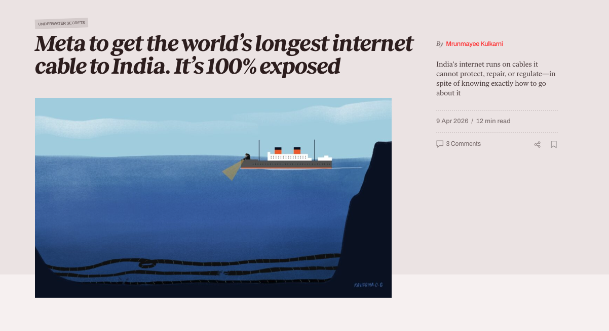
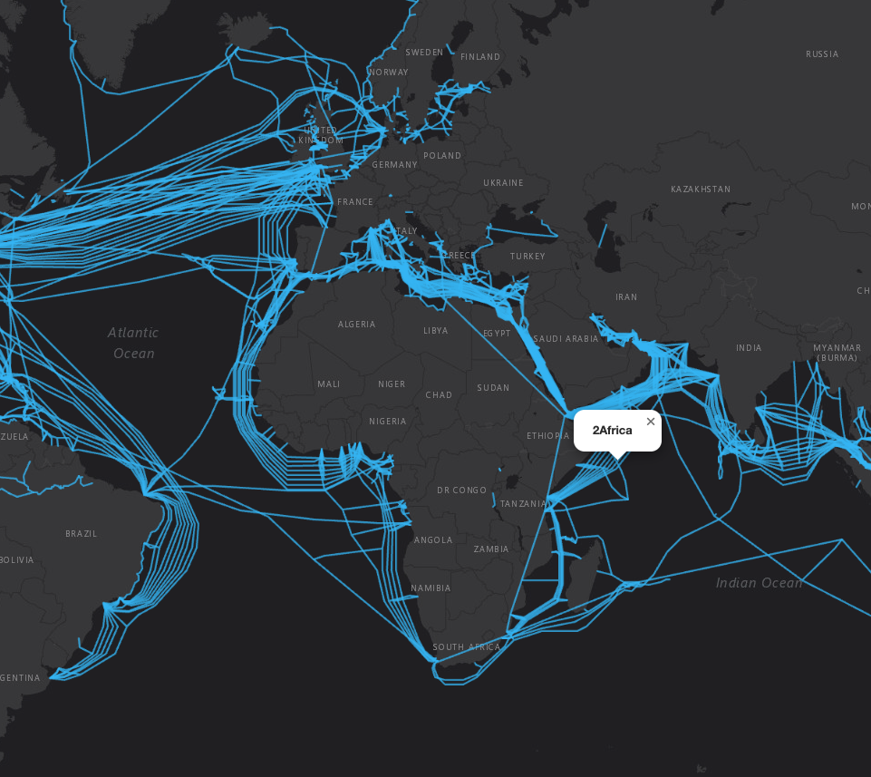
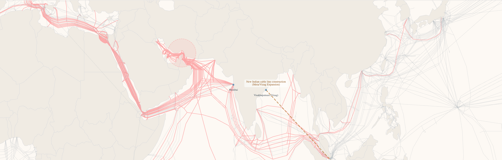
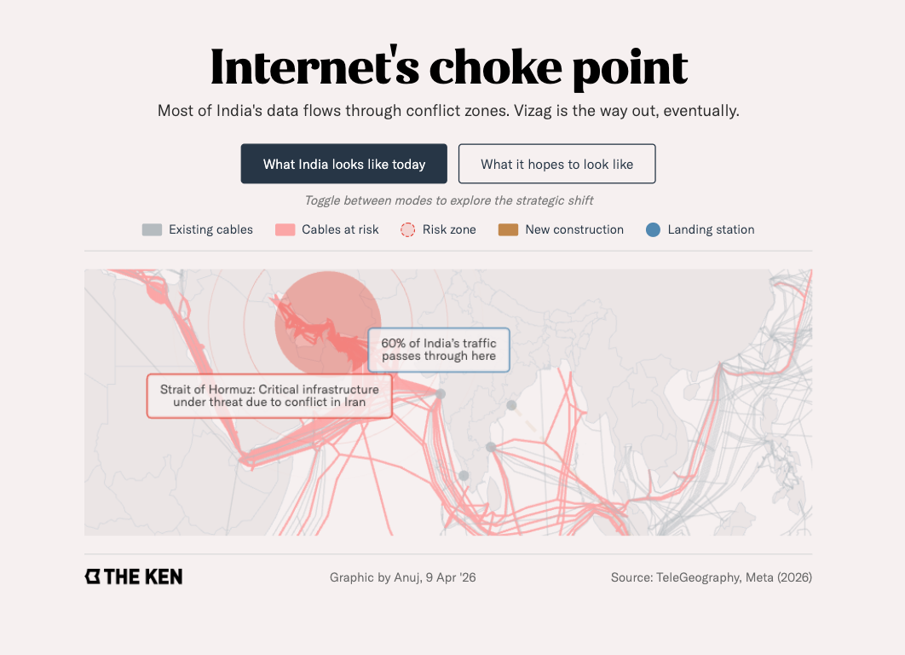
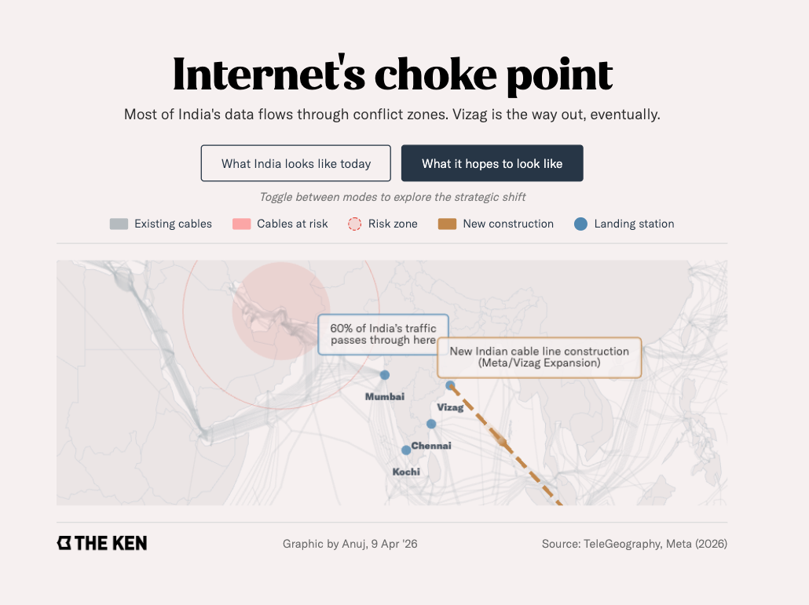

UNDERSEA CABLES
Meta is laying the world's longest internet cable to India — and it's almost entirely exposed.
Meta is laying the world's longest internet cable to India — and it's almost entirely exposed.
"India's internet runs on cables it cannot protect, repair, or regulate — in spite of knowing exactly how to go about it."
I worked with an independent writer on a piece built around this brief — nominally about Meta's new undersea cable connecting LA and Vizag, but really about the wider, fragile network of undersea cables India depends on, set against the backdrop of the Strait of Hormuz conflict. The goal was to visualise these stress points: even an anchor strike on a cable can trigger losses running into billions of dollars.

Showing the full network — not just the one cable in the headline — was essential for the story to land.
Cable geo-data was sourced from a GitHub repository maintained by a community contributor, totalling roughly 300 data points. Each cable wasn't a single coordinate pair but a list of intermediate points, which defined the direction and curvature of each line on the map.
The final formatting pass was done with Claude: given the required changes along with context and examples, it handled the remaining data transformations reliably.
const cableData = [
{
"type": "Feature",
"geometry": {
"coordinates": [
[[44.55, 11.24], [43.31, 12.62],
[42.98, 13.05], [38.25, 20.38]], ...
]
},
"properties": {
"name": "2Africa",
"length": "45,000 km",
"owners": "Bayobab, China Mobile,
Meta, Orange, Vodafone, ...",
"landing_points": [
{ "name": "Luanda, Angola" },
{ "name": "Manama, Bahrain" }, ...
]
}
},
...
]

Once the data format was understood, I rebuilt it in a working spreadsheet.
It was customised to the visualisation's needs — removing extraneous values and treating certain data points differently depending on how they needed to render (e.g., rounding coordinates for cleaner curves).

The base visualisation was generated with Google Gemini and JavaScript libraries.
OpenStreetMap + Leaflet + GitHub for an accurate map of India, including correct depiction of disputed territories, superimposed over the base layer.
eCharts for interactive tooltips showing detailed cable information on hover.
With the functional visualisation in place, I built out the visual design in Figma.
This was created using reference of existing layout conventions and The Ken's internal chart guidelines — including typefaces (Jazmin Alt, GT America) and the established colour palette.

This was created to give the reader direct context for the story's headline subject. Geographic zones central to the narrative — the Strait of Hormuz and India — were explicitly demarcated on the map for clarity.
A second tab/state was added to the map, focused specifically on the Meta LA–Vizag cable.

The final visualisation was embedded into the story via an iframe, and published on 16th April.